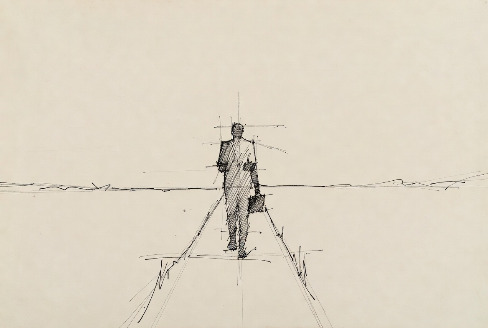

Bitcoin IRAs.

Two jobs, not one.
A self-directed IRA that holds bitcoin has to do two separate things well, and it is easy to blur them together. It has to be a proper, compliant retirement account. And it has to keep the bitcoin genuinely safe.
Those are different jobs, handled by different parts of the structure. Compliance comes from your custodian. Safety comes from how the keys are held. Keeping the two apart is the whole point, and it is the first thing to be clear about, because most confusion in this corner of the market comes from mixing them.
The custodian makes it an IRA.
What makes your account a real, IRS-compliant IRA is a qualified custodian. The custodian holds the account, titles it for the benefit of your IRA, and handles contributions and distributions the way the rules require. That is the part that keeps you on the right side of the line.
It is not the multisig. It is not any particular arrangement of keys. A provider who tells you that the key setup itself is what keeps you compliant is quietly skipping the part that actually does the work. The keys are a security question, and we will get to them next. Compliance is a custodian question, and the custodian answers it.
Musonius works alongside your IRA custodian. We are not your custodian, and we never hold your bitcoin. The custodian keeps the account correct. We keep the bitcoin safe. Two jobs, two parties, no overlap.
You hold one key of three.
This is the safety half, and it is where Musonius is built differently from most bitcoin retirement setups.
In many accounts described as multisig, you hold enough keys to move the bitcoin by yourself. That is still a compliant account, but from a control standpoint it is the same as keeping everything on a single device. If your keys are taken, or you are pressured into signing, nothing stands in the way.
In a Musonius vault you hold one key of three, and you can never move the bitcoin alone. An independent cosigner is required every time. A key taken from you, on its own, moves nothing.
There is a gentler version of the weaker setup worth naming. Some services watch your vault and send you an alert when bitcoin moves. A notice is useful, but it is a record of something that already happened. It cannot stop a spend, because you already held enough keys to make it. A required second signature is a different kind of thing. It does not tell you after the fact. It decides whether the spend happens at all.
For money you might touch every day, that extra step is friction. For a retirement account meant to sit untouched for years, the friction is the protection. It is the reason a single bad moment, a stolen key, a coerced signature, a convincing fake page, cannot empty the account on its own.
Inheritance is already built in.
An IRA is built to pass to the people you name. The vault is built the same way, so the two fit together without bolting anything on.
The person you choose as your inheritance keyholder maps naturally onto the beneficiary of the account. If you become unable to act, then after a long and clearly signaled waiting period your two cosigners can recover the bitcoin for your heirs. Your keys never have to surface, and the bitcoin never has to be sold to make the handover work.
During your life that waiting period resets every time you use the vault, so it never runs down by accident. Your heirs inherit the bitcoin itself, held the same sovereign way you held it, not a paper claim on someone else’s balance sheet.
What we do not claim.
A page that only lists advantages is not worth trusting. Here is what this structure does not do, stated plainly.
- We do not claim our keys keep you compliant. Your custodian does that. We keep the bitcoin safe; the custodian keeps the account correct. If anyone blurs those two, be careful.
- We do not claim the watch-and-notify approach is unsafe. It is a real design, and it gives you more day-to-day freedom than we do. Our edge is structural, not a claim that anyone else is careless.
- We do not hide the cost of our way. Because you hold only one key, an everyday spend needs a cosigner in the loop. We think that is the right trade for retirement bitcoin meant to sit for years. You should know it is a trade before you make it.
We name these on purpose. The right structure for your retirement bitcoin is a decision you should be able to make with your eyes open.
Compliance from the custodian. Safety from the math.